Department of Mechanical Engineering, Brigham Young University
*Equal contribution †Equal contribution ‡Corresponding authors
Manuscript in preparation for the ASME Journal of Mechanical Design · talk at ASME IDETC-CIE 2026 · three talks at TMS 2027
Tensegrity-inspired structures of rigid and soft members could cushion impacts, but their transmitted shock is hard to predict by simulation. We report a drop-test-driven Bayesian optimization campaign over three-strut prisms printed in one piece from polylactic acid (PLA) and thermoplastic polyurethane (TPU). The search space has five geometry variables, plus infill densities and filament settings from the third batch. We scale each candidate to a common mass target before printing, then 3D print and drop-test it repeatedly. We score designs by transmissibility (measured as a ratio of filtered top-to-base peak accelerations) and a mass-weighted rebound index (specimen mass times the squared fraction of impact velocity returned at the top), both minimized. Most specimens amplify the peak shock. Over a quasi-random initial batch and three model-recommended batches (35 specimens), the dominated hypervolume grew 56 percent, and the model chose every design on the final Pareto front. The final batch's best-predicted design lowered transmissibility to 0.803, 10 percent below the best initial-batch specimen. We printed one batch three times to measure repeatability. Print-to-print scatter in transmissibility was near 1 percent, and a seating check flagged both large outliers, so single-print extremes stay provisional until replicated. Code and data are available at github.com/vertical-cloud-lab/tensegrity-optimization.
Every batch goes around the same loop. A Gaussian-process surrogate fitted to the drop-test measurements recommends the designs, the batch is printed as one build plate, and each specimen is drop-tested repeatedly before its results go back to the surrogate.
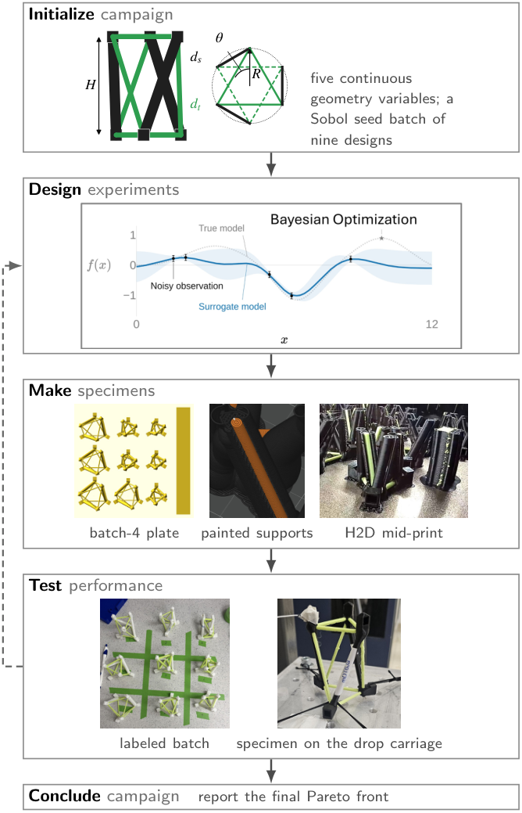
Initialize: the five-variable T3-prism design space of Table 1 (Fig. 2). Design: a Gaussian-process surrogate fitted to the noisy measurements recommends the next batch (Section 3.4). Make: we scale each batch to a common mass and lay it out as one build plate. We slice the plate with PLA supports painted by hand along the TPU tendons and print it in one dual-nozzle job, with the hard material (PLA) from the left nozzle and the soft material (TPU) from the right (Section 3.2). Test: we drop-test the labeled specimens one at a time on the drop-tower carriage (Section 3.3). Conclude: report the final Pareto front. The plate render is batch 4, the mid-print frame is a later replicate plate, and the labeled specimens are batch 2.
The test article is a three-strut prism (T3 prism): three rigid PLA struts held in a network of flexible TPU tendons, printed as one piece. Five geometry variables set its shape: base radius R, cell height H, twist angle θ, strut diameter ds and tendon diameter dt. Infill densities and filament settings join them from the third batch (Table 1). Each candidate is scaled to a common mass target before it is printed.
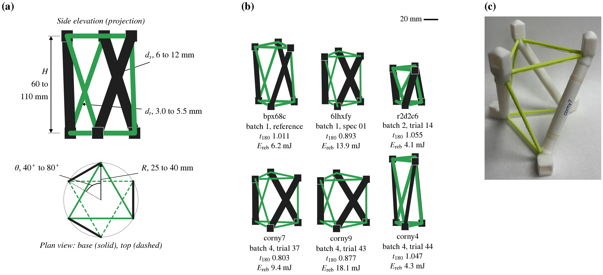
(a) A mid-range design of the five-variable box (R = 32.5 mm, H = 85 mm, θ = 60°, ds = 9 mm, dt = 4.25 mm, before scaling to the mass target), labeled with the bounds of each variable. The side elevation is an orthographic projection, so each end triangle appears as a line, and H is the vertical distance between the planes through the joint centers. The plan view shows the base triangle (solid), the top triangle (dashed), the circumradius R, and the twist θ between them.
(b) Six tested specimens at their printed, post-projection geometry and one millimeter scale, labeled with the batch, the Ax trial (or the Sobol spec of a seed specimen), and the measured t180 and Ereb.
(c) Specimen corny7 as printed, with its ID label around one strut. The drawings show PLA struts in black, TPU tendons in green, and the square strut-end housings. We printed specimen corny7 in white PLA.
| Variable | Symbol | Range | Units | Active |
|---|---|---|---|---|
| Base radius | R | 25-40 | mm | batch 1 on |
| Cell height | H | 60-110 | mm | batch 1 on |
| Twist angle | θ | 40-80 | deg | batch 1 on |
| Strut (PLA) diameter | ds | 6.0-12.0 | mm | batch 1 on |
| Cable (TPU) diameter | dt | 3.0-5.5 | mm | batch 1 on |
| Strut infill density | 12-35 | % | batch 3 on | |
| Tendon infill density | 12-35 | % | batch 3 on | |
| PLA nozzle temperature | 212-228 | °C | batch 3 ona | |
| PLA volumetric speed | 20-30 | mm3/s | batch 3 ona | |
| TPU nozzle temperature | 235-245 | °C | batch 3 ona | |
| TPU volumetric speed | 2.2-3.6 | mm3/s | batch 3 ona | |
| Joint diameter (fixed) | dj | 7.0 | mm |
aOne value per print job (a plate carries a single filament configuration), so per-batch rather than per-specimen. The seed batch is an n = 9 Sobol draw (fixed seed) over the five geometry variables, and each design is then projected onto the constant-mass budget. The acquisition chooses the two infill densities per specimen. All specimens print upright on a Bambu Lab H2D, with the prism axis normal to the build plate and the base triangle on the bed.
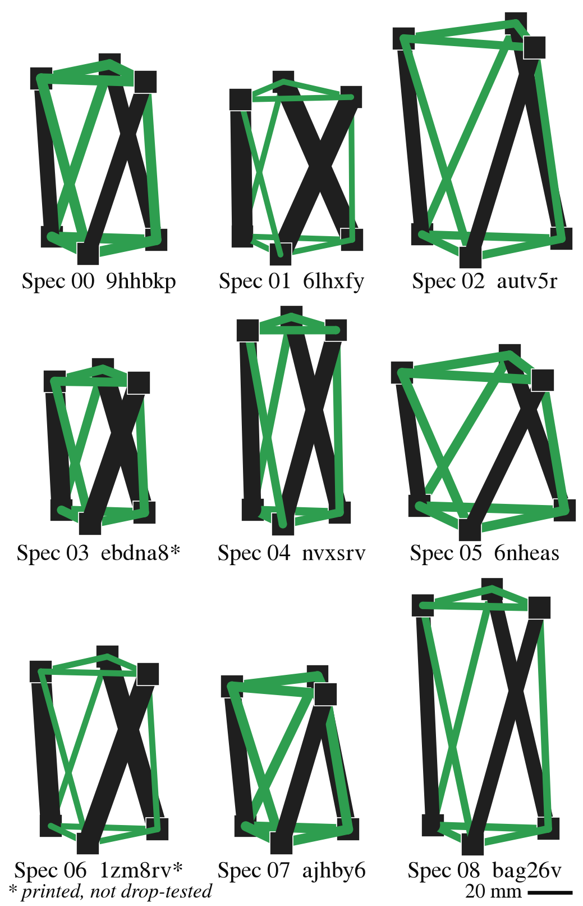
All specimens print upright on a Bambu Lab H2D, PLA from the left nozzle and TPU from the right, with each later batch on one nine-specimen plate. PLA supports, painted by hand along the TPU tendons in the slicer, hold the tendons up while they print.
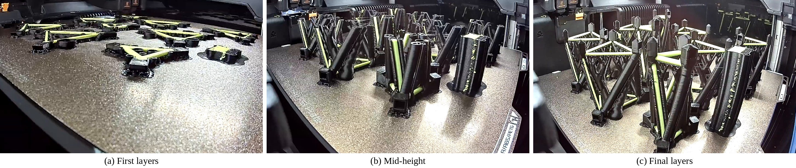
To check how well a single print stands for its design, we printed the batch-3 designs three times (Fig. 9) and three batch-4 designs again on three replicate plates.
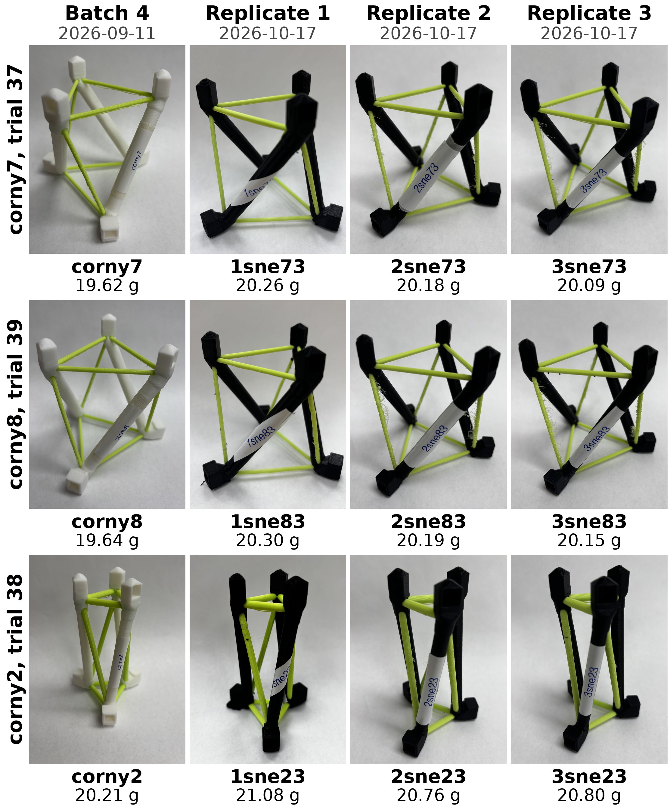
The first column is the batch-4 specimen (print log of 2026-09-11), and the other three are the front-row copy from replicate plates 1 to 3 (print log of 2026-10-17). Labels give the specimen ID and weighed mass. The batch-4 struts are white PLA and the replicate struts black PLA. Camera distance varies between photographs, so apparent size is not comparable across cells. The replicate drop tests are not complete, so the figure reports no measured values.
Each specimen rides upright on the free-fall carriage of a Lansmont Model 23 shock test system. The carriage is raised 60 in (1.524 m) along guide rails and released, and it lands on a polyurethane cushioning sheet. An accelerometer on the carriage records the input, and a triaxial accelerometer at the specimen's top vertex records what gets through. Both objectives are minimized: the transmissibility t180, the ratio of the filtered top-to-base peak accelerations, and the mass-weighted rebound index Ireb = m ereb2, the specimen mass times the squared fraction of impact velocity returned at the top.
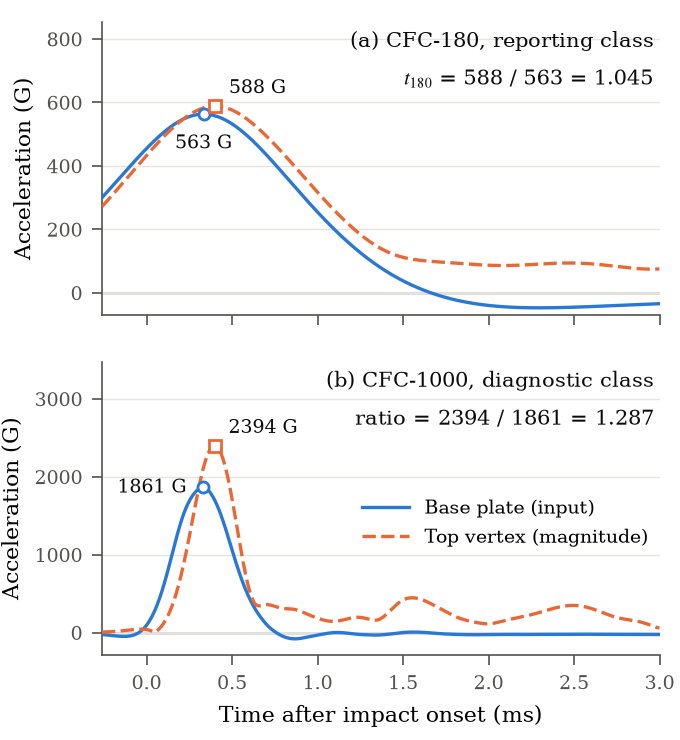
The specimen is 57vqhx from the pre-campaign print-defect study (2026-07-28, event 50 of its session), dropped from 60 in onto the earlier stack of four felt pads and one cardboard sheet. Campaign drops land on the polyurethane surface instead. We low-pass filter both channels with the SAE J211/1 CFC filter, and the top-vertex trace is the magnitude of the three filtered axes. The zero-phase CFC-180 filter spreads the sub-millisecond pulse in both directions in time, so its traces are already nonzero at impact onset.
Most specimens amplify the peak shock (t180 above 1). Over the quasi-random seed batch and three model-recommended batches (35 specimens), the dominated hypervolume grew 56 percent, and the model chose every design on the final Pareto front.
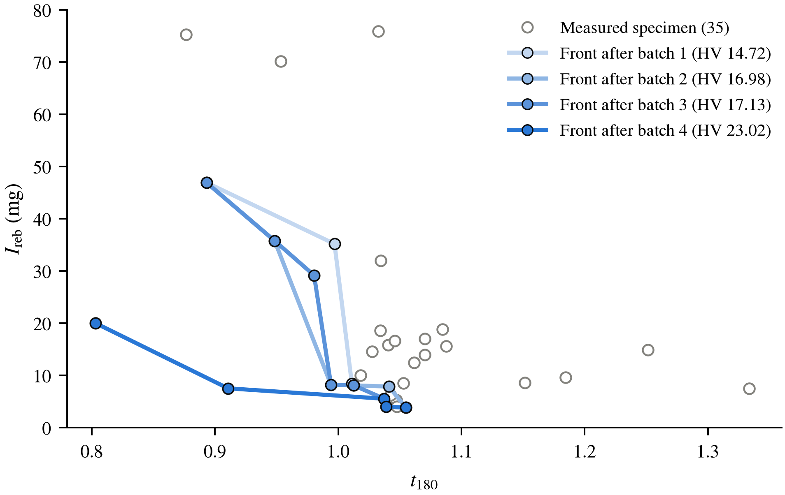
The vertical axis is the mass-weighted rebound index Ireb = m ereb2 of Eq. (1). Gray circles are all 35 measured specimens at their stabilized means. The blue lines are the non-dominated fronts after each batch, with the dominated hypervolume (HV) at the (1.35, 50 mg) reference in the legend. We draw repeated batch-3 designs at their first-print values. The text gives the design-mean front.
The final batch's best-predicted design, specimen corny7, lowered transmissibility to 0.803, 10 percent below the best specimen of the initial batch.
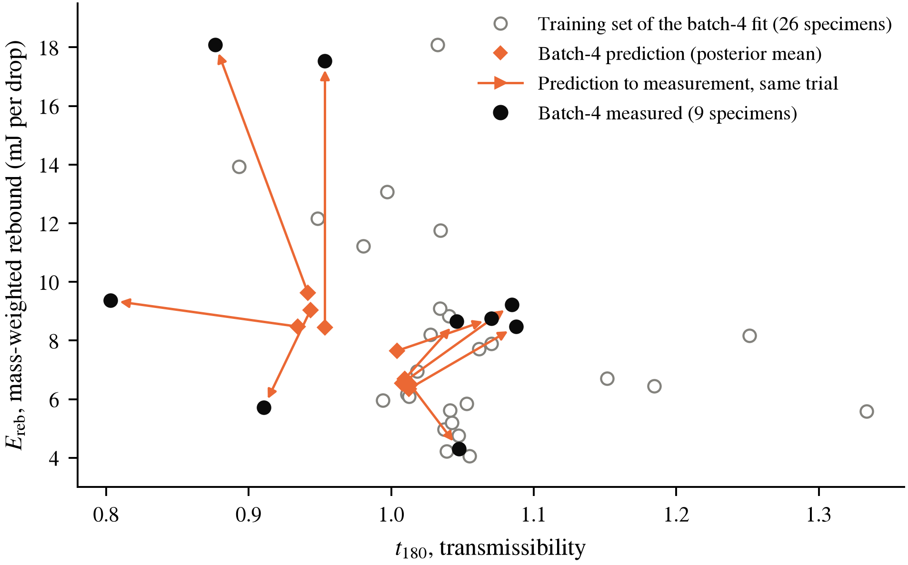
Orange diamonds are the archived posterior-mean predictions for trials 37 to 45, saved when the optimizer recommended the batch, and each arrow joins a prediction to the measured value of the specimen printed for the same trial (black). Gray circles are the 26 specimens we trained the batch-4 fit on (the seed batch, batch 2, and the first prints of batch 3). The vertical axis is Ereb, the first-power form of Section 3.3 that the optimizer predicted and minimized when it recommended the batch. Fig. 6 plots Ireb instead. We omit predictive uncertainty for legibility. Lower is better on both axes.
Printing the batch-3 designs three times put the print-to-print scatter in transmissibility near 1 percent. A seating check flagged both large outliers, so single-print extremes stay provisional until they are replicated.
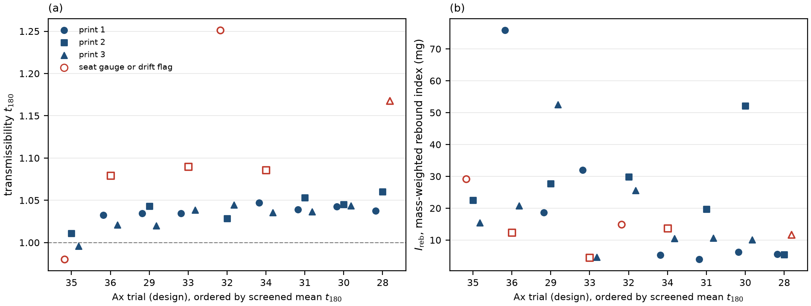
In a simulation-only campaign on a MuJoCo model of the drop tower, Bayesian optimization (BO) reached 93.0 percent of the best-known hypervolume after 45 designs (seeds 90.0 to 96.1 percent), against 76.5 to 79.1 percent for random, Sobol, Latin hypercube and compass-search baselines. The simulator benchmarks the optimizer and is not a substitute for the drop tower.
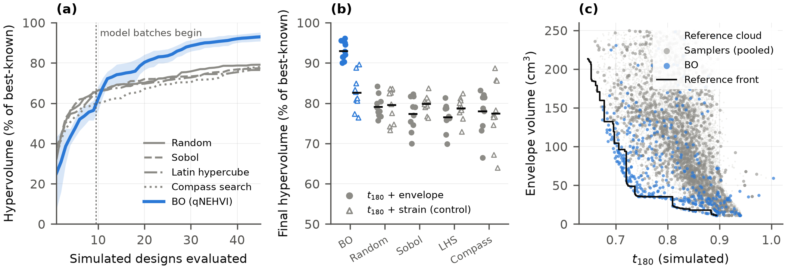
Every batch was chosen by a surrogate that took each specimen's standard error of the mean (SEM) over its drops as known, fixed noise. A later review of the optimization methods (#121) pointed out that two prints of the same design differ by far more than those SEMs allow. Told the measurements were that precise, the model explained the gap with the inputs that differ between prints, mainly the printed mass, and stayed flat between specimens.
We refitted the same model to the same 44 specimens (the 35 designs, with two prints of each of the nine batch-3 designs) and let it learn the noise from the data instead. To test it, we held out one design at a time (both prints together), refitted on the rest and predicted the held-out design. The Spearman rank correlation between these held-out predictions and the measurements rose from +0.32 to +0.55 for transmissibility and from −0.40 to +0.51 for the rebound objective. The rebound objective here is Ereb = ereb m g h in millijoules, with g the gravitational acceleration and h the drop height: the first-power form the optimizer minimized when it chose batches 2 to 4, as in Fig. 8.
This is a re-analysis of data already collected. No batch was chosen with the learned-noise model, and the two figures below are candidates for the paper rather than part of the 5 Nov 2026 draft.
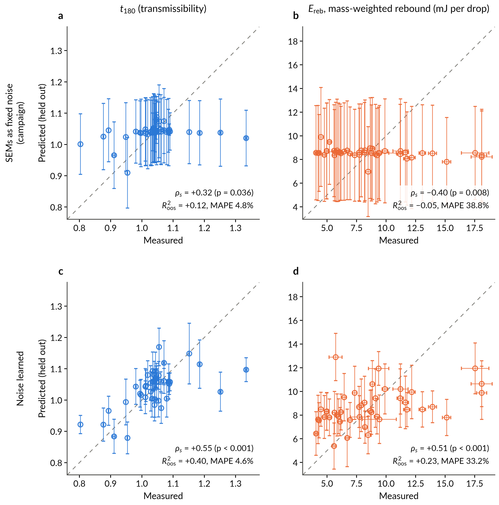
Leave-one-design-out cross-validation over 44 specimens in 35 folds. The two prints of each batch-3 design are held out together, so neither leaks into the other's prediction. Both rows are the campaign's fully Bayesian Gaussian-process surrogate in Ax 0.5.0 with the same folds, seeds and sampler budget (one refit per fold, 512 warmup steps and 256 samples); only the noise model differs. The top row redraws Fig. S3 of the supplementary information.
Vertical bars are one posterior standard deviation of the held-out prediction, and horizontal bars are the specimen's SEM. In the bottom row the vertical bars leave out the learned print-to-print noise (standard deviation 0.044 to 0.049 for t180 and 2.6 to 2.9 mJ for Ereb), so they understate the spread of a new print. ρs is the Spearman rank correlation, with its two-sided permutation p value. R2oos is the out-of-sample coefficient of determination against predicting each fold's training mean, which scores 0. MAPE is the mean absolute percentage error. With 44 specimens, differences in ρs under about 0.2 are not resolved, and both changes here are larger than that.
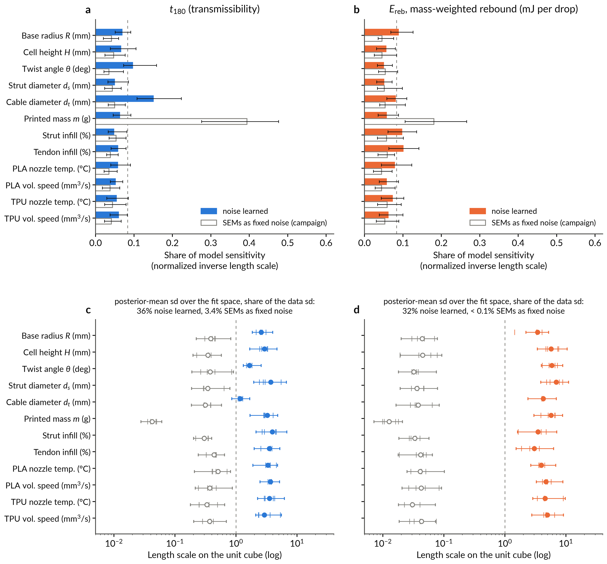
The model is the twelve-input surrogate (the eleven design variables of Table 1 plus printed mass) fitted to all 44 specimens, pooled over four sampler seeds (64 posterior draws). A length scale is the distance along one input, as a fraction of its range, over which the prediction changes appreciably, so a short one means the model responds sharply to that input. The share of model sensitivity is Ax's feature importance: each input's inverse length scale, normalized so that the twelve shares sum to 1. Bars are posterior medians and whiskers interquartile ranges. The dashed line is an equal share (1/12) in (a, b) and a length scale equal to the input's full range in (c, d).
With the SEMs as fixed noise, printed mass takes the largest share (0.39 for t180, 0.18 for Ereb) at length scales of 0.04 and 0.013 of its range, and every other Ereb length scale is 0.03 to 0.045. The model uses mass to tell the two prints of a design apart, interpolates the 44 specimens and is flat between them: its posterior mean varies over the design space by 3.4 percent of the data's standard deviation for t180 and by under 0.1 percent for Ereb. With the noise learned, every length scale is 1.2 to 6.9, so the model is smooth and close to linear, and its posterior mean varies by 36 percent (t180) and 32 percent (Ereb) of the data's standard deviation. Cable diameter dt leads t180 in all four seeds (share 0.15), twist angle comes next (0.10), and printed mass drops to an ordinary share. Ereb has no stable leader: tendon infill 0.10, strut infill 0.10, R 0.09.
Both figures are also on an interactive page: hover over a point for the specimen, its print session, its twin print, the measured and predicted values and all twelve inputs, or over a bar for each seed's value.
| Surrogate | t180 ρs (p) | t180 R2oos | t180 MAPE | Ereb ρs (p) | Ereb R2oos | Ereb MAPE |
|---|---|---|---|---|---|---|
| Campaign: SEMs as fixed noise | +0.32 (0.036) | +0.12 | 4.8% | −0.40 (0.008) | −0.05 | 38.8% |
| Same model, noise learned | +0.55 (<0.001) | +0.40 | 4.6% | +0.51 (<0.001) | +0.23 | 33.2% |
| Replicate-based SEMsa | +0.52 (<0.001) | +0.37 | 4.8% | +0.38 (0.012) | +0.12 | 35.0% |
| Noise learned, filament settings dropped (eight inputs)a | +0.52 (<0.001) | +0.42 | 4.4% | +0.44 (0.003) | +0.19 | 33.6% |
| Tuned random forest (reference) | +0.52 (<0.001) | +0.33 | 5.0% | +0.27 (0.082) | +0.08 | 35.9% |
| Training mean (reference) | 0 | 5.2% | 0 | 37.9% |
The same 35 folds and 44 specimens throughout. Replicate-based SEMs add the print-to-print scatter of the twin prints in the training fold to each specimen's SEM. The eight-input model drops the four filament settings, which change only between batches and so cannot be told apart from other differences between batches. aFitted with BoTorch 0.18 rather than Ax 0.5.0. That code reproduces the first two rows: ρs = +0.30 and −0.51 with the SEMs as fixed noise, +0.52 and +0.46 with the noise learned. The fits behind the replicate and eight-input rows are drawn in a third parity figure on #121.
The campaign is the subject of Marcus Madsen's talk at ASME IDETC-CIE 2026, Discovering multi-material, tensegrity-inspired energy absorbers via closed-loop Bayesian optimization (track DAC-10, Design of Engineering Materials and Structures). The recording is from the lab's group meeting on 21 Sep 2026, with questions from 15:32.
Group meeting, 21 Sep 2026 (open on YouTube). The slides, figures and clips for the talk were assembled on #84. The two-page extended abstract, idetc-abstract.pdf, was submitted as Closed-Loop Bayesian Optimization of Multi-Material 3D-Printed Tensegrity-Inspired Energy Absorbers.
Build-chamber timelapse of nine specimens, the source of Fig. 3.
Timelapse, 14 Jul 2026: the left half of the teaser.
Painting the PLA supports along the TPU tendons, 12 minutes without audio (#35).
From a PLA and TPU print (#35).
A surrounding support and a smaller support gap that reduced the wobble (#35).
How a single drop is set up on the tower (#36).
Drop tests of the batch-2 plate, with some cycles shown (#86).
19 May 2026 (#36).
IDETC-CIE 2026, 7 Aug 2026, recorded before batches 2 to 4 were tested (#84).
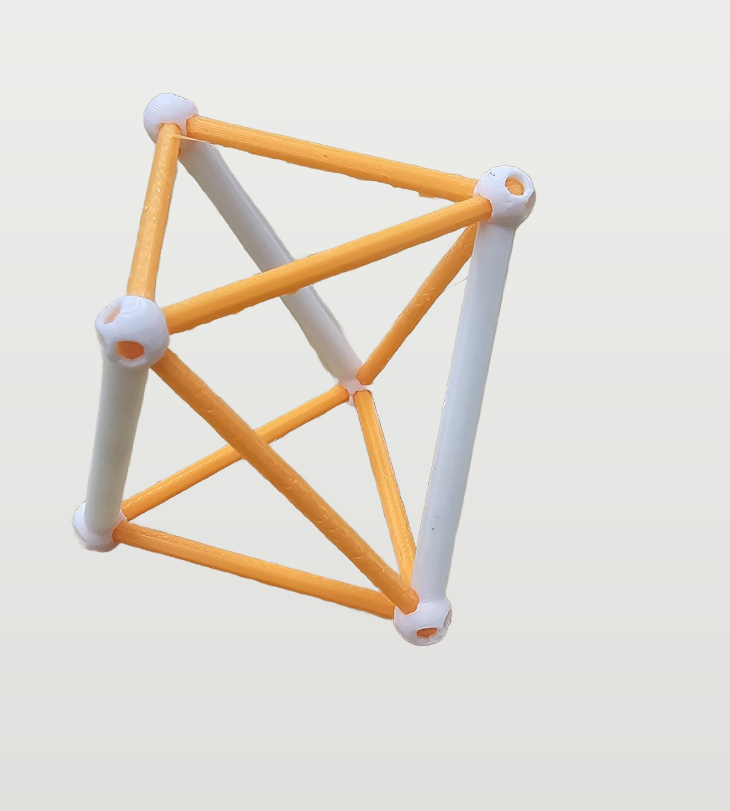
Journal manuscript. In preparation for the ASME Journal of Mechanical Design: manuscript and supplementary information (PDF, 5 Nov 2026 draft). The draft is revised on #76 (tracked in #75).
ASME IDETC-CIE 2026. Extended abstract (PDF, 2 pages) for the talk above.
TMS 2027 Annual Meeting & Exhibition (Orlando, 14 to 18 Mar 2027). Three talks. Each title links to its abstract on ProgramMaster, the abstract and program site TMS uses, and each abstract lists all five authors with the presenter first.
Proposal. The BYU Mentored Research Grant proposal (PDF) that the project grew out of.
Until the paper is out, please cite the repository:
@misc{madsen2026tensegrity,
title = {Experiment-Driven Bayesian Optimization of the Impact
Response of Multi-Material {3D}-Printed
Tensegrity-Inspired Structures},
author = {Madsen, Marcus E. and Christiansen, Audrey K. and
Han, Jinkwan and Hill, Jeffrey R. and Baird, Sterling G.},
year = {2026},
note = {Manuscript in preparation for the ASME Journal of
Mechanical Design},
howpublished = {\url{https://github.com/vertical-cloud-lab/tensegrity-optimization}}
}